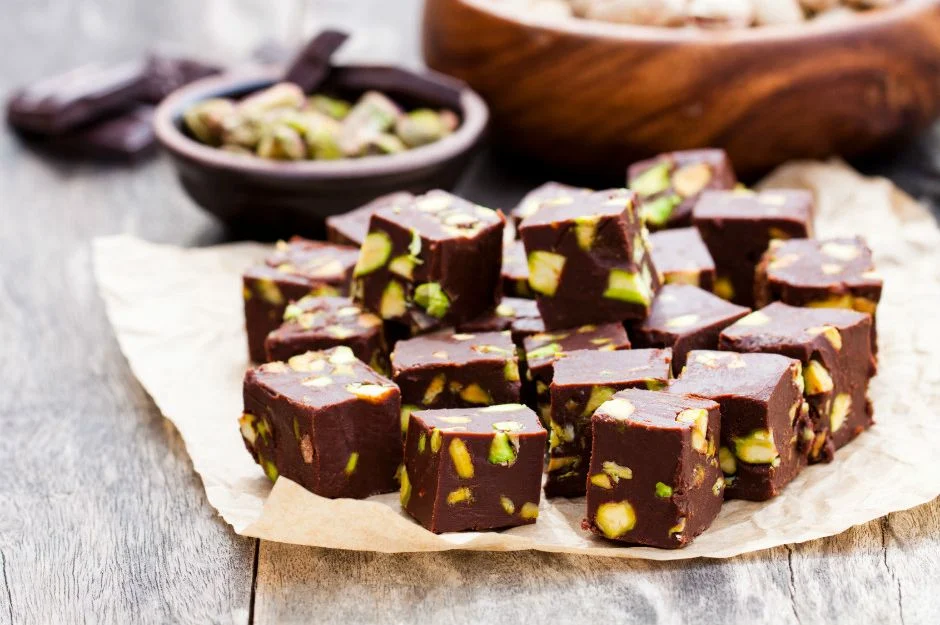

...Çikolata Küpleri...
Çikolata ve antep fıstıklı tadımlık lezzetler... Yalnızca 4 malzeme ile hazırlanan çikolata küpleri, renkli kağıtlarda veya kürdan batırılarak servis edilir. Özellikle kalabalık sofralarda yer verilen çikolara küpleri, doğum günü gibi özel etkinliklerde de sunulabilir.
Tarif: Rukiye Beyza Sarıkaya

Kaç kişilik? 4 kişilik
Hazırlama süresi: 30 dk
Pişirme süresi: 10 dk
Çikolata Küpleri Tarifi İçin Malzemeler:
- 350 gr bitter çikolata
- 150 ml krema
- 1 çorba kaşığı tereyağı
- 150 gr antep fıstığı(badem ya da fındık da olabilir.)
Çikolata Küpleri Nasıl Yapılır?
- Bitter çikolatayı benmari usulü eritin.
- Eriyen çikolata üzerine krema ve tereyağını ekleyip iyice karıştırıp tencereyi bir tezgaha alın.
- Antep fıstıkları havanda çok az dövüp irili ufaklı parçalara bölün.
- Ufalanan fıstıkları çikolatalı karışıma ekleyip karıştırın.
- Hazırladığınız çikolatayı varsa alüminyum hazır bir kare tepsiye, yoksa kenarlardan taşarak yağlı kağıt yerleştirdiğiniz küçük bir tepsiye dökün.
- Buzdolabında iki saat bekletin.
- Çikolatayı kalıptan çıkartın. Kare parçalara bölün.
Afiyet olsun...